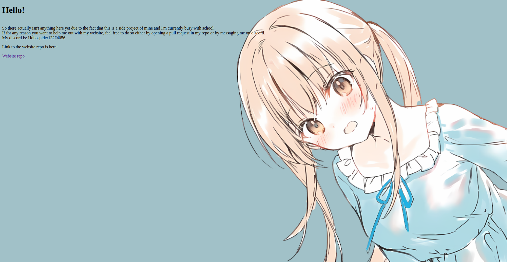
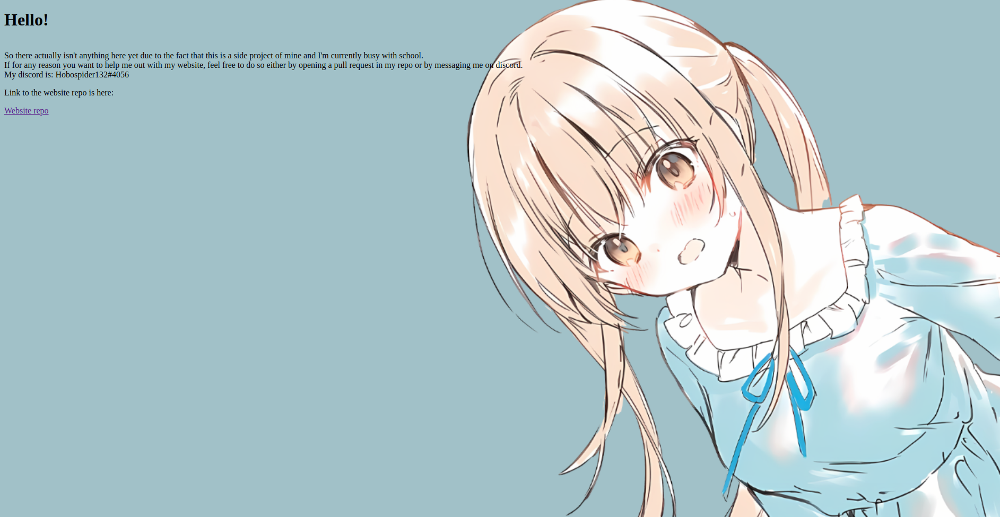

Most of this stuff is taken from ClearVision, It's mainly because i'm learning rn
I hope one day I can understand this stuff and make it myself
Until then, i'm gonna keep learning
This version has been discontinued.
So there actually isn't anything here yet due to the fact that this is a side project of mine and I'm currently busy with school.
If for any reason you want to help me out with my website, feel free to do so either by opening a pull request in my repo or by
messaging me on discord.
My discord is: Hobospider132#4056.
One final note, currently I have a very basic knowledge of HTML and other webdev components, however, I am currently taking courses.
Hopefully by December this will be a good website
 

So these images are just screenshots of progress and previous versions
So I didn't actually need a website but I learnt about github pages and it seems very cool
I made an Osu! skin with things that I liked from other skins.
I used components from AutumnVN's Mahiru skin, Bacon Boi skin, White cat, Hidden optimised, Pzzy's cursor dance and Selyu's cursor dance
Download links: